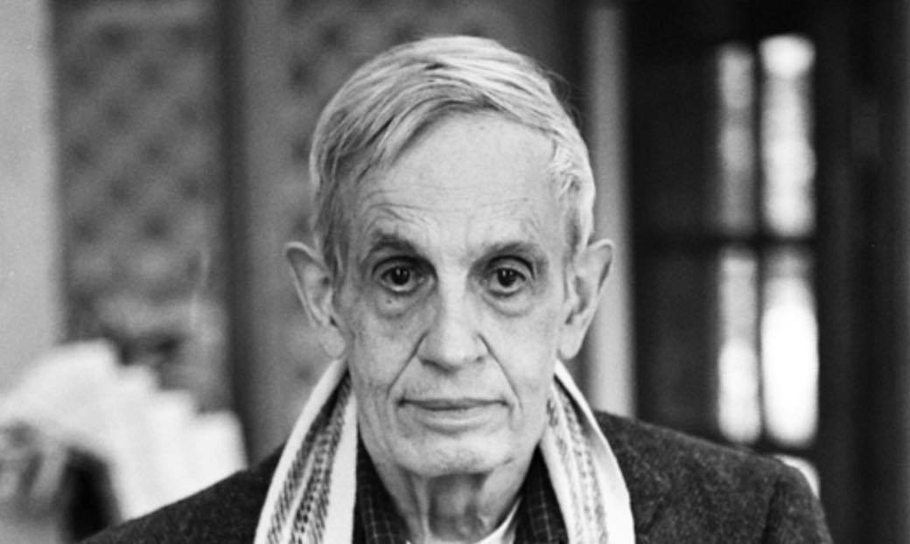

John Forbes Nash Jr.

- 1928 - Borns at Bluefield, West Virginia
- 1941 - Joined Bluefield University
- 1945 - Joined Carnegie Institute of Technology
- 1948 - Graduated with both a B.S a M.S in mathematics
- 1951 - Was hired by MIT as an instructor
- 1957 - Married with Alicia Lopez-Harrison de Lardé
- 1959 - First noticiable signs of mental illness appear
- 1959 - Resigned his position as a member of MIT mathematics faculty
- 1959 - Was admitted to McLean Hospital for treatment of schizophrenia
- 1963 - Nash and de Lardé divorced
- 1978 - Awarded the INFORMS John von Neumann Theory Prize
- 1990 - Lardé and Nash resumed their relationship
- 1994 - Awarded the Nobel Memorial Prize in Economic Sciences
- 2001 - Remarried with Lardé
- 2010 - Awarded the Double Helix Medal
- 2015 - Earned the Abel Prize
- 2015 - Nash and Lardé died in a car accident while they were comming
back from the Abel Prize cerimony. He was 86 years old.
"Thus further time passed. Then gradually I began to intellectually reject some of the delusionally influenced lines of thinking which had been characteristic of my orientation. This began, most recognizably, with the rejection of politically oriented thinking as essentially a hopeless waste of intellectual effort. So at the present time I seem to be thinking rationally again in the style that is characteristic of scientists."